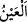

buradan gider, tam sâhilin olduğu yerden gitmez.
Rivâyete göre Mûsâ’nın annesi sandığın içine pamuk serdi ve Mûsâ’yı içine koydu.
Sonra da su almaması için üzerini ziftle sağlamlaştırdı. Sonra da sandığı Nil nehrine
bıraktı. Nehirden Fir’avn’un bağ ve bahçelerine bir kanal gidiyordu. Su Mûsâ’yı bu
kanala sürükledi ve bahçedeki bir havuza gölete götürdü. Fir’avn, Müzâhim kızı Âsiye
ile orada oturuyordu. Fir’avn sandığın çıkarılmasını emretti. Sandık açılınca ne
görsünler, yüzü ay parçası gibi parlak bir çocuk. Onu suyun içinde bir ağacın yanında
buldukları için ona “Mûsâ” ismini verdiler.
Kıptî dilinde “mû” su, “sâ” ise ağaç demektir. Fir’avn onu o kadar sevdi ki neredeyse
onu görmemeye dayanamıyordu. İşte âyetin devamı da bunu ifâde etmektedir:
Ey Mûsa! Sevilmen, şefkatle büyütülmen, sevgi ile terbiye edilmen “ve benim
nezâretimde yetiştirilmen için sana kendimden sevgi verdim.” Seni gözetip koruyan
Benim. İnsanın bir şeye önem verip onu gözü gibi koruması gibi seni korurum.
Âyette “
(göz)” kelimesi, müsebbebe (sebep sonucu meydana gelen şeye) sebebin
ismi verilmek yoluyla korumak ve gözetmekten mecaz olarak kullanılmıştır. Çünkü bir
şeye bakan onu istemediği şeylerden korur, onda olmasını istediği şeyleri gözetir.
et-Te’vîlâtü’n-Necmiyye’de der ki: “Âyet işâret etmektedir ki ezelî inâyet birine
ulaştı mı artık o kimse bütün hallerinde inâyet nazarının gözetiminde olur. Dünya ve
âhiret işlerinden karşılaştığı her iş, o kimsenin iyilik ve terbiyesinin artmasına, takdir
olunan yüksek makamlara ulaşmasına vesile olur.”
“Sana kendimden sevgi verdim.” Ben onların kalplerine öyle bir sevgi tohumu ektim
ki seni bir kere gören artık senden ayrılamaz. Bu yüzden Allâh’ın düşmanı seni sevmiş
ve âilesine almıştır. Rivâyete göre Mûsâ (a.s.)’ın yüzünde öyle bir cemal ve gözlerinde
öyle bir şirinlik vardı ki görenler ondan kendilerini alamazdı.
Ay güzel, fakat senin yüzün ondan da güzel
Sevgilinin gözünü neyleyeyim, senin gözün ondan da güzel
et-Te’vîlâtü’n-Necmiyye’de şöyle der: “Sana kendimden” kendi sevgimden bir
“sevgi verdim” ki beni seven seni de benim muhabbetimle gerçekten sevsin, benim ve
senin düşmanın ise seni taklid üzere sevsin. Nitekim Âsiye Allâh’ın sevgisi ile onu
gerçekten sevmişti, Fir’avn ise Allâh’ın verdiği taklîdî bir sevgi ile onu sevmişti.
Fir’avn’un sevgisi taklîdî olduğu için Mûsâ (a.s.)’dan gördüğü en küçük ters bir
hareketle ona karşı beslediği sevgi tamamen kaybolmuştur. Âsiye’nin sevgisi ise hakîkî
bir sevgi olduğundan hiç değişikliğe uğramamış, aynen devam etmiştir.
Taklid ehlinin irâdesi de böyle olur. Mukallid mürîdin tabîatına uygun olmayan en
ufak bir hareket ile bozulur. Hakîkî mürîdin irâdesi ise tabîatına ve hevâsına uygun
olmayan en büyük bir hareketle bile bozulmaz. O bütün hallerde teslimiyet ehlidir.